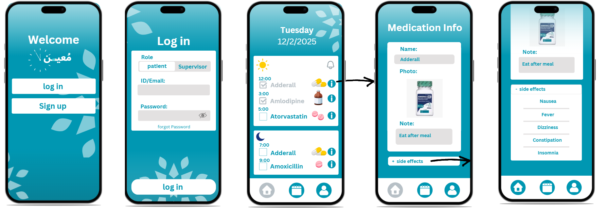

▶ Mueen - Medication Tracker App
Course: System Analysis and Design -
This project focuses on a comprehensive system designed to track medication doses.
It includes a Software Requirements Specification (SRS),
a Software Design Document (SDD), and a UI prototype.
The system features a user-friendly interface that sends timely medication reminders to ensure
patient
adherence. Additionally, it provides a connected interface for doctors to monitor adherence and
receive
real-time updates on their patients' health status.

Project Documentation: View Project PDF